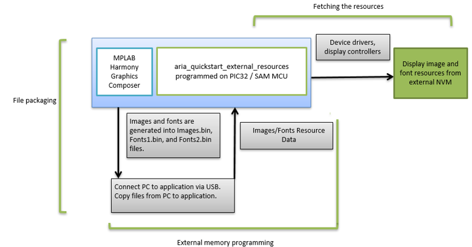
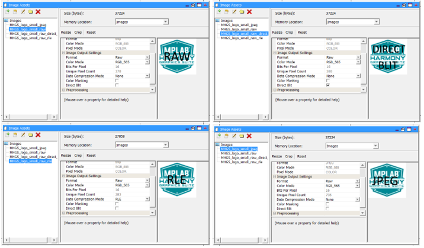
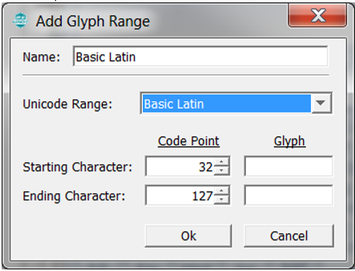
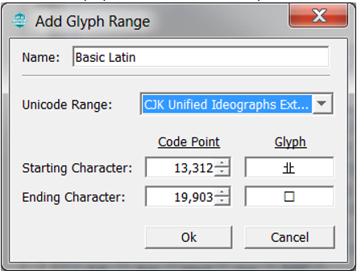
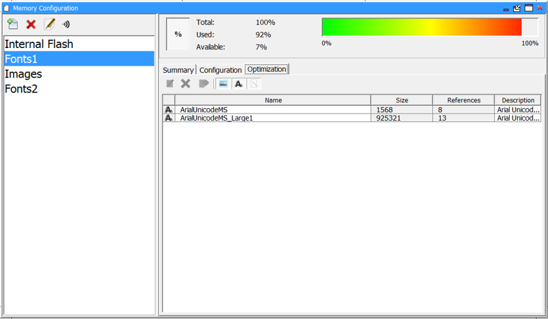
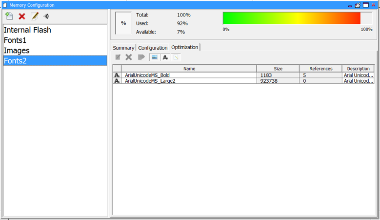

The external resources are stored on SQI Flash that is presented as a FAT32 USB mass storage device (MSD). This allows a user to copy the assets files directly into the SQI Flash using a USB connection to a host PC.
The intent of aria_quickstart_external_resources (MSD media storage) application is to demonstrate Aria Graphics Library’s ability to support assets stored on external NVM. Another intent is to highlight possible draw performance drawbacks with these techniques and to serve as a guiding post for UI application designers on their judicious use.
Applications requiring multiple images or non-alphabet-based languages with large number of glyphs, have a very large NVM requirement for their graphics resources. In such applications, storing these graphics resources on-chip may be inefficient or impossible. The solution is to store the graphics resources to off-chip NVM, thereby preserving the on-chip NVM for program memory and allowing for more complex functional features.
The aria_quickstart_external_resources (MSD media storage) application populates some of its user interface from assets stored on on-chip NVM and other parts of it from assets stored as binary data on an external NVM. The resources are stored on SQI Flash that is presented as a FAT32 USB mass storage device (MSD). This allows a user to copy the assets files directly into the SQI Flash using a USB connection to a host PC.
To demonstrate how to access graphics resources stored on an external memory device, two components are needed:
• File Packaging
• Fetch Application
The following figure shows the external resources process diagram.

The same image, stored externally as four different encoding formats, are demonstrated: Uncompressed RAW, Run-Length Encoded (RLE), Uncompressed RAW with direct blit enabled, and JPEG compressed.

The image files are generated into an external binary data file called Images.bin. This file is to be copied from a PC host directly into external SQI Flash, which is presented as FAT32 formatted USB MSD device.

The aria_quickstart_external_resources (MSD media storage) application also demonstrates the ability of the Aria Graphics Library to support multiple languages in the same application build. One language is alphabetic (English) and the other is non-alphabetic (Chinese). English is supported via the Basic Latin Unicode Range (ASCII 32 to 127).

For Chinese, the MPLAB Harmony Graphics Composer’s built-in automatic glyph filter is overridden to use the enter CJK Unified Ideographs Extension 1 (UTC 13,312 to 19,903). This covers 6591 most commonly used kanji glyphs. The glyphs for both languages are retrieved and displayed from external memory at runtime.

The font data is to be generated into two separate files: Fonts1.bin and Fonts2.bin. The files are to be copied from a PC host directly into external SQI Flash, which is presented as FAT32 formatted USB MSD device.
This is to demonstrate the ability for the graphics library to retrieve data for the same font for two separate binary resource repositories.


|
MPLAB® Harmony Graphics Suite
|